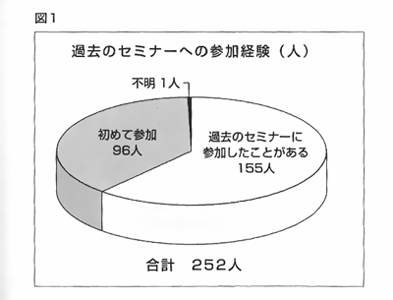
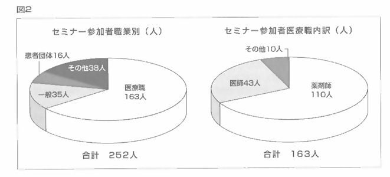

第５回医薬ビジランスセミナー
|
|
2006年10月21日と22日の2日間、大阪市の関西大学天六キャンパスで第5回医薬ビジランスセミナーを開催しました。 セミナー参加者数とその内訳を報告します。参加者の実人数は1日だけ参加と両日参加を合わせて252人（1日目：202人、2日目：238人）。 第4回は310人でしたので参加者総数は減りましたが、前回との違いは2日間通しての参加者が多かったことです。 図１は、医薬ビジランスセミナーに参加したことがある人と初参加者との割合をみたものです。 約６割が参加経験者です。 ほかの医療関係のセミナーやシンポジウムの内訳を知りませんので、この割合が多いのか、 少ないのかは判断できませんが、ほどほどの新陳代謝かなと考えます。 参加者の職業別割合は図２のとおり。全参加者の約3分の1強が非医療職の方でした。 季刊誌「薬のチェックは命のチェック」の編集目的は、患者・市民と医療関係者とが理解し合い、 意見交換できるために同じ情報を持つことです。 そして、セミナーはその実践の場にしたいと願っています。 現実には、会場での発言はまだまだ遠慮がちですし、もっと激論になってもいいのでは？ と思うくらい大人しい場面が多々見受けられますが、 今後とも医療関係者と非医療関係者が激論し、話し合える場の提供を目指したい。 そのためにも、今回の高血圧症やメタボリックシンドローム、 インフルエンザのようにだれにとっても身近な内容をテーマにできるよう、 医学用語の使い方など工夫していきます。 なお、収支報告はおって「薬のチェックは命のチェック」26号とホームページでいたします。 |
セミナー参加者の声 |
ジェネリックを知りたい賢い患者になろうと思って参加しました。 前回も参加してそのときの「血圧もコレステロールも下げてはならない！」 という浜さんの話に「うそっ！！」と思いました。 また「がんは切ってはいけない！」という話は目からうろこでした。 今回はインフォームド・コンセントの話と人工呼吸器の話、 メタボリック・シンドロームの話に興味を持ちました。 専門的なところがあって理解しにくいところがありますが、それでも次回も参加したいと思います。 70歳、血糖値の検査と血圧の検査に2週間に1度、通院しています。 次回、ジェネリック医薬品を取り上げてください。（竹中弘繁） |
|
【NPOJIPより】 ジェネリックは、第3回医薬ビジランスセミナーで取り上げました。 季刊誌「薬のチェックは命のチェック」の7号（特集：必須薬）と8号（特集：喘息と必須薬）が、 第3回セミナーに向けての特集号でしたので、それを読んでいただくとジェネリックとは何か？ ジェネリック＝必須薬ではないことなど、大枠は掴めるかと思います。 読んでみて疑問点などがおありのときは「薬のチェック」の「質問箱」コーナーへ投稿をどうぞ。 |
疫学データに基づいた議論をしてほしい脳症分科会について：浜さんが進行を行なってしまうと、 つい議論を一定方向に持って行こうとしてしまうので、 できれば別の方が良かったと思います。タミフルでの異常行動のメカニズムがどうなのかといった議論や、 脳症を発症した患者の中にいかなる薬剤も服用していなかった患者が1例でもいるかどうかといった議論は、 あまり意味がないと思います。症例対照研究でも何でも、疫学データに基づいた議論が必要かと思われます。 全体について：このセミナーに患者さんが多数参加されていることは素晴らしいとは思いますが、 会場で患者個別の質問をするのは遠慮願う旨を予めアナウンスすべきだと感じました。 また、ある薬は100％ダメ、というオール・オア・ナッシングの断定は、ある意味では解りやすくてよいのですが、 誤解を招くのでとても危険だと感じました。 |
|
【NPOJIPより】
はい、次回、浜さんは司会にしません。 質問の受付を含めて全体の進行はさらに何とか工夫をと思います（事務局、坂口）。 当事者の浜から一言：最も大切なことは、疫学調査ができていない段階でいかに因果関係を詰めるかです。 10月のセミナーの時点では、厚生労働省の報告書は出ていなかったのです。 臨床試験と症例報告、NPO医薬ビジランスセンター（薬のチェック）に寄せられた数々の症例、 そして動物実験があるだけの状態で、「インフルエンザ脳症だ」 「熱せん妄だ」としてタミフルとの因果関係に目を向けない専門家 への反論が必要でした。 そのためには、「インフルエンザの自然経過」で「タミフル服用後のような異常行動が起きることがあるのか」 を詰めることは決定的に重要なことです。 医薬ビジランスセミナー後に報道のあった米国食品医薬品局（FDA）の報告でも 「インフルエンザの自然経過では説明できない」ことが触れられていました。 FDAもタミフルとの因果関係を重視しているからこそ、 この点に言及しているのです（詳しくは季刊誌「薬のチェック」25号のトピックを参照）。 疫学調査ができていない段階では、 動物実験のデータからみた発症の機序を議論することはとても大切なことです。 それを無視しては関連性の議論は上滑りになります。疫学調査があっても、動物実験データは重要ですが、 疫学調査がない段階では、なおさら重要です。そして疫学調査を待っていては手遅れになることもあります。 誤解を避けるために、セミナーではこうした前提について十分前置きをしておく必要があったのでしょうね。 本来は、どなかたに司会を任せて、私が発言するというのがよいのでしょうが、あまりにも最先端で次々に情報が加わり、 事前の打合せが困難と思ったので、あえて私が司会も兼任しましたが、もう少し工夫が必要だったと思います。 |
知らないことが一番こわいこと年４回の「薬のチェックは命のチェック」のご本、私ども無学の者には多少高レベルですが、 一生懸命読んでいます。私自身２９歳から産後にうつ状態で苦しみ、「あーでもない、こーでもない」 不安などん底の真っ暗な生活がありました。安定剤や睡眠剤等たくさん飲んできまして、 今やっと普通の体力に戻りましたが、「薬のチェック」を読んで一つひとつ薬害を勉強する機会に恵まれてありがたいです。 第５回医薬ビジランスセミナーに思い切って参加して、わかる範囲で内容は受け取っています。 これからもボツボツ本誌を友に勉強します。知らないことが一番こわいことです。 |
|
【NPOJIPより】
セミナーや「薬のチェック」は、一般の者・医学の素人にはむつかしい、という意見をしばしば聞きますので、 うれしい感想です。一読してすぐ分かるというものではないかも知れませんが、２度３度と噛めば噛むほどおいしいスルメだと思って、 辛抱強く読んでくださいますようお願い申し上げます。 |